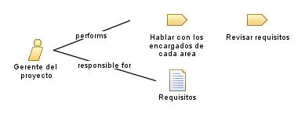

| Role: Gerente del proyecto |
| |
 |
| El gerente de proyecto es responsable de garantizar que el proyecto se ejecute de manera eficiente, dentro de los plazos establecidos y con los resultados esperados, al tiempo que gestiona los recursos y las expectativas de las partes interesadas |
| Synonyms: Director de proyectos, Gestor de proyectos |
|
Relationships
 |
| Primary Performs |
|
| Modifies |
|
Main Description
El rol del gerente de proyecto implica liderar, planificar, coordinar y supervisar todas las actividades relacionadas con
el desarrollo y entrega exitosa del software. El gerente de proyecto es responsable de establecer los objetivos del
proyecto, asignar recursos, gestionar el alcance, el cronograma y el presupuesto, y comunicarse eficazmente con el equipo
de desarrollo y todas las partes interesadas involucradas.
El gerente de proyecto también desempeña un papel fundamental en la identificación y gestión de los riesgos del proyecto,
resolviendo problemas y tomando decisiones para mantener el proyecto en el camino correcto. Además, actúa como punto de
contacto principal para las comunicaciones internas y externas del proyecto, asegurando una comunicación fluida y efectiva
entre todos los miembros del equipo, los clientes y otras partes interesadas. |
Staffing
| Skills | Gestion de proyectos, Liderazgo, Comunicacion, Gestion de alcance, Gestion de riesgos, Gestion de recursos, Conocimientos
tecnicos |
| Assignment Approaches | Asiganacion directa, Asignacion por disponibilidad, Asignacion por habilidades. |
| Synonyms | Director de proyectos, Gestor de proyectos |
|